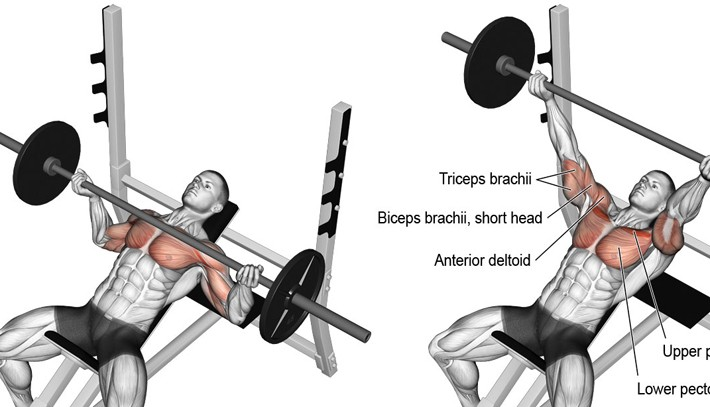

운동
운동의 종류
운동의 무게
운동의 자세
기록없이는 당신의 근육 성장하지 않는다!
일단 체크! 당신은 오늘 운동했나요?
YES
NO
앞으로 제가 만들 사이트는
운동
과 관련된 웹 어플리케이션
을 만들 생각입니다.

(가장 대표적인 벤치프레스의 사진을 가져와봤습니다.^_^)
(움직이는 영상은
이쪽으로!!
)
(영상2)
여러분은 이 사이트를 통해서 자신의 1RM을 예상하여 최적의
중량을 예측하여 최적의 무게로 최적의 운동을 할 수 있습니다.
Please enable JavaScript to view the
comments powered by Disqus.